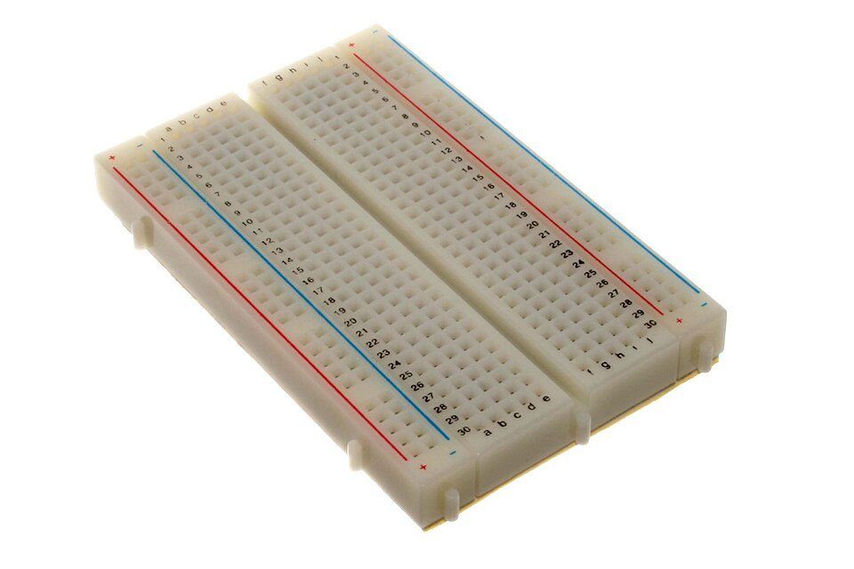

E00 — Fundamentos Eléctricos
"En software, el bit es sagrado y abstracto. En electrónica, el bit es 3.3 voltios en un cable." — la primera lección del puente
Antes de tocar un microcontrolador, necesitás entender qué es realmente la electricidad que hace funcionar TODO lo que programaste hasta ahora. Esta lección traduce los 3 conceptos base — voltaje, corriente, resistencia — al lenguaje de un programador.
1 o un 0, en el hardware eso era un voltaje alto o bajo. Acá vas a ver QUÉ es físicamente ese bit que dabas por sentado.
0. La gran analogía: el agua
- Voltaje (V) = la presión del agua. Cuánto "empuja". Se mide en voltios.
- Corriente (I) = el caudal. Cuánta agua pasa por segundo. Se mide en amperios.
- Resistencia (R) = qué tan angosta es la cañería. Cuánto se opone al paso. Se mide en ohms (Ω).
1. Los 3 conceptos base
| Magnitud | Símbolo | Unidad | Qué es | Analogía agua |
|---|---|---|---|---|
| Voltaje | V (o U) | Voltio (V) | Diferencia de potencial — el "empuje" | Presión |
| Corriente | I | Amperio (A) | Flujo de electrones por segundo | Caudal |
| Resistencia | R | Ohm (Ω) | Oposición al paso de corriente | Angostura del caño |
| Potencia | P | Watt (W) | Energía por segundo = V × I | Fuerza total del chorro |
1 es típicamente 3.3V o 5V y un 0 es 0V (GND). Cuando en software hacés x = 1, en el chip eso pone un pin a voltaje alto. El bit no es abstracto: es una decisión de "¿hay presión o no?".
2. Ley de Ohm — la ecuación que TODO lo gobierna
Voltaje = Corriente × Resistencia. De acá salen las otras dos:
- I = V / R (cuánta corriente fluye dado un voltaje y resistencia)
- R = V / I (qué resistencia necesito)
R = V / I = 9V / 0.02A = 450 Ω3. Potencia — por qué las cosas se calientan
P = (9V - 2V) × 0.02A = 0.14W (el LED "consume" ~2V). Una resistencia de 1/4W (0.25W) lo aguanta. Si calculás mal y la potencia supera el límite de la resistencia, se quema (literalmente humea).
⚡ Calculadora interactiva de la Ley de Ohm
4. Circuito serie vs paralelo
R_total = R1 + R2 + R3.1/R_total = 1/R1 + 1/R2.SERIE: PARALELO:
──[R1]──[R2]── ──┬──[R1]──┬──
└──[R2]──┘
misma corriente mismo voltaje
voltajes se suman corrientes se suman5. Leyes de Kirchhoff
Ley de voltajes (KVL): en cualquier lazo cerrado, la suma de los voltajes = 0. (Conservación de energía — lo que sube de potencial baja en algún lado.)
6. AC vs DC
| Tipo | Qué es | Dónde |
|---|---|---|
| DC (corriente continua) | Voltaje constante, fluye en una dirección | Baterías, USB (5V), lógica digital, todo lo embebido |
| AC (corriente alterna) | Voltaje oscila (sinusoidal), cambia de dirección 50/60 veces por seg | Enchufe de pared (220V/110V), transmisión de energía |
7. Herramientas que vas a usar
- Multímetro: mide voltaje, corriente, resistencia, continuidad. La herramienta #1. (~$10-30)
- Protoboard (breadboard): placa para armar circuitos sin soldar. Reusable.
- Fuente de poder o pilas: provee el voltaje DC.
- Componentes básicos: resistencias, LEDs, capacitores, cables jumper.
- Osciloscopio (más adelante): "ve" cómo cambia el voltaje en el tiempo — el "print debugging" del hardware.

console.log: en software debuggeás imprimiendo valores. En hardware, "imprimís" midiendo voltajes con el multímetro. No podés ver una variable — pero podés medir el voltaje en un pin. Es el mismo instinto de debugging, otra herramienta.
8. Simuladores (empezá sin comprar nada)
- Tinkercad Circuits — simula circuitos + Arduino en el browser, gratis. Empezá acá.
- Falstad Circuit Simulator — visualiza el flujo de corriente animado.
- Wokwi — simula ESP32/Arduino con código real, ideal para E03.
9. Errores típicos del programador que empieza con hardware
10. Recursos canónicos
- Tinkercad Circuits — práctica sin comprar nada
- SparkFun Tutorials — los mejores tutoriales de electrónica básica
- All About Circuits (textbook gratis)
- "Make: Electronics" (Charles Platt) — el libro para aprender haciendo
- "The Art of Electronics" (Horowitz/Hill) — la biblia (avanzado)
✅ Checkpoint
1. ¿Qué es físicamente un bit en hardware?
Un voltaje. Típicamente un 1 = 3.3V o 5V (HIGH) y un 0 = 0V (LOW, GND). El bit abstracto del software es una decisión física de "hay voltaje alto o bajo en este cable".
2. ¿Qué dice la Ley de Ohm y para qué se usa?
V = I × R. Relaciona voltaje, corriente y resistencia. Se usa para dimensionar componentes: ej, calcular qué resistencia poner en serie con un LED para que circule la corriente correcta y no se queme.
3. ¿Por qué un LED necesita resistencia en serie?
Porque sin ella, la corriente sería demasiado alta (I = V/R, con R muy baja → I enorme) y el LED se quema. La resistencia limita la corriente al valor seguro (~20mA típico).
4. ¿Diferencia entre serie y paralelo?
Serie: componentes uno tras otro, misma corriente, voltajes se suman, resistencias se suman. Paralelo: lado a lado, mismo voltaje, corrientes se suman, la resistencia total baja.
5. ¿Por qué tu CPU necesita disipar calor?
Porque P = V × I: cada transistor que conmuta consume energía que se disipa como calor. Con miles de millones de transistores conmutando a GHz, el calor es enorme. Por eso optimizar código también reduce consumo de energía (crítico en embebido a batería).
6. ¿Por qué dos circuitos que se comunican necesitan GND común?
Porque el voltaje es una DIFERENCIA de potencial — necesita una referencia. "3.3V" significa "3.3V respecto a GND". Sin tierra común, los dos sistemas no tienen un cero compartido y los voltajes no son comparables.
🧠 Autoevaluación rápida
Respondé sin mirar arriba. Cada pregunta te explica el porqué.
1. La Ley de Ohm relaciona…
2. ¿Qué hace una resistencia en un circuito?
3. ¿Qué mide el ampere (A)?